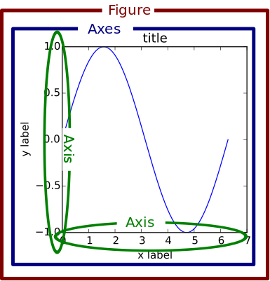

OVERVIEW
Matplotlib is a tool for producing 2D plots in Python. It can make 3D plots, however it was originally designed to be used for 2D plots. It was developed as an open source replace to Matlab's plotting capabilities.
COMPOSITION OF MATPLOTLIB
There are three parts to matplotlib ( http://matplotlib.org/users/intro.html)
- pyplot interface
This is the main part of matplotlib where we do all the data processing. it contains
all the functions we need to manipulate and change parts of a figure.
Note that there is also pylab which is almost the same as pyplot. I'm not sure of the
technical differences, but advice on Stackoverflow recommends using pyplot only. pylab
is recommended to use for gui-type interfaces.
- matplotlib frontend
This section of code handles the actual creation and drawing of the figures. Here
we could create our own custom styles of plots and do other drawings if we wish
- matplotlib backend
This is handles all the conversion to pdf, png, ps, svg, and so on. It is device dependent.
BASIC TERMINOLOGY
There is a fantastic figure demonstrating the different parts of a figure matplotlib. Original available here.

- Figure ~ this refers to the entire plotting area.
- Axes ~ this is the region of the plot. A figure can contain many axes
- Axis ~ these are the x,y (or x,z,y) axis of a plot. Related to data limits. Each axes has 2 or 3 axis.
One way to think of this abstraction is that figure refers to the entire area where plotting takes place.
There can be mutliple plots on a single figure. Each of these multiple plots have an associated "Axes" which
contains title, labels, and 2/3 axis. The axis of each axes contains information about the data limits.
Unfortunately I find the terminology to be rather confusing. But the picture really helps.